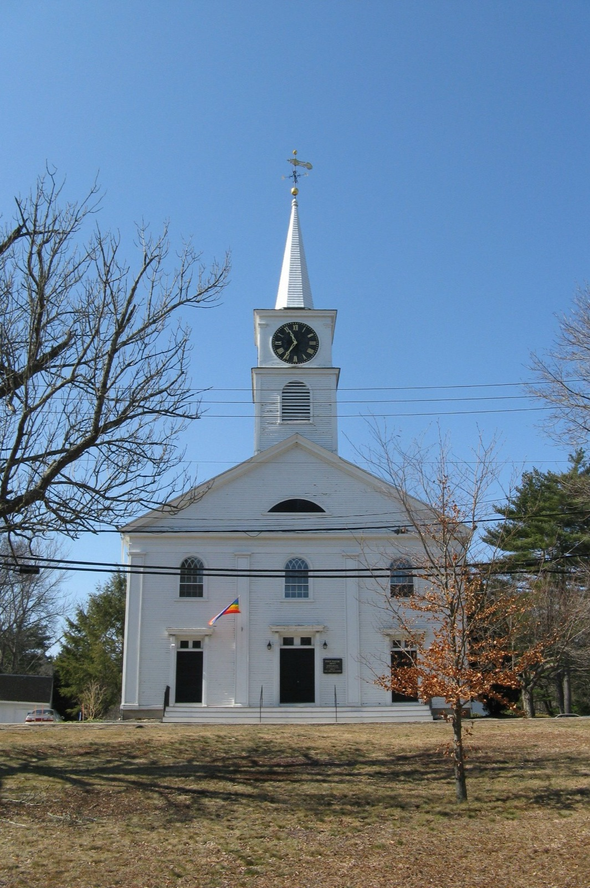
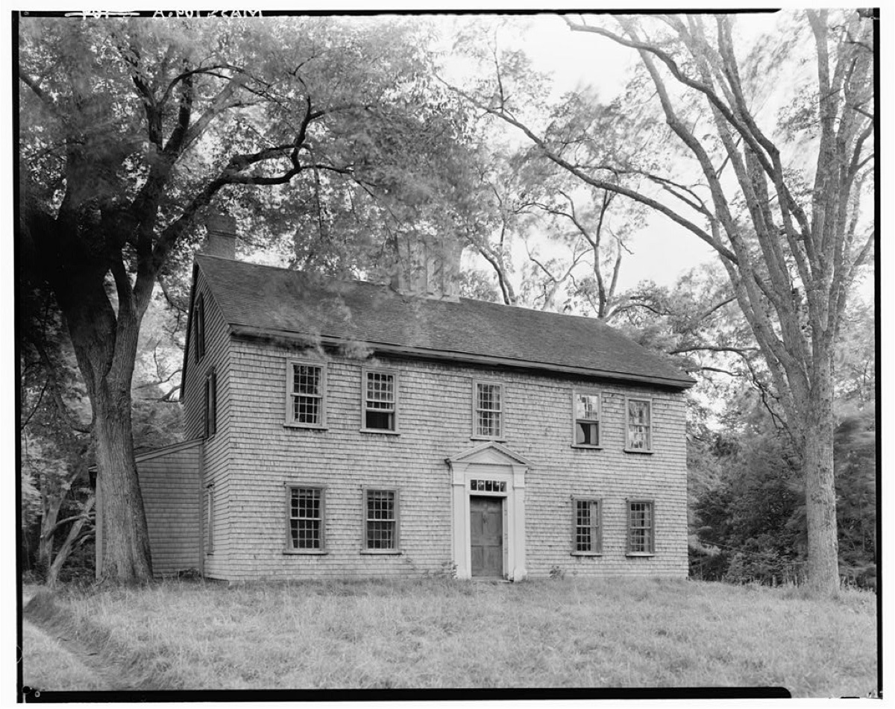

Independent community water quality initiative
We track PFAS and public testing data for the Norwell Water Department's ten groundwater wells and help Norwell families understand what's really coming out of the tap — in plain language, sourced from public records.
Norwell's water comes entirely from ten town-owned groundwater wells, split across three treatment plants: South Street, Grove Street, and Washington Street. All three feed the same distribution system — as Water Superintendent Jason Federico put it at a 2025 budget meeting, "all that water goes into the same hose."
In spring 2024, the town finished a $2.34 million upgrade at the South Street plant that removes PFAS entirely at that location. But water from the Washington Street wells has been trending the other way: it has exceeded the state's PFAS6 drinking water standard in recent testing, most recently confirmed in a public notice dated April 1, 2026.
| Entry point | PFAS status | MA PFAS6 MCL |
|---|---|---|
| South Street (Wells 1, 6) | ~0 ppt after spring 2024 upgrade | 20 ppt |
| Grove Street (Wells 2, 3, 5, 10) | Below the limit | 20 ppt |
| Washington Street (Wells 4, 7, 8) | 21 ppt (Q1 2026 average) | 20 ppt |
Source: Norwell Water Department PFAS6 Public Notice, April 1, 2026, and Capital Budget Committee minutes, March 17, 2025. See the full breakdown on the Water data page.


Norwell Water Watch is a volunteer-run initiative started by residents who wanted a plain-language, independent source for what the town's own water testing actually shows — separate from the Water Department's own reporting, and easier to follow than a quarterly public notice PDF.
We read the Consumer Confidence Reports so you don't have to, track new PFAS results as the town publishes them, and help neighbors figure out whether their household should be doing anything differently while the town works out its longer-term fix.
Request a free in-home water test and a volunteer will follow up to walk through what your results mean.
Get a free water test